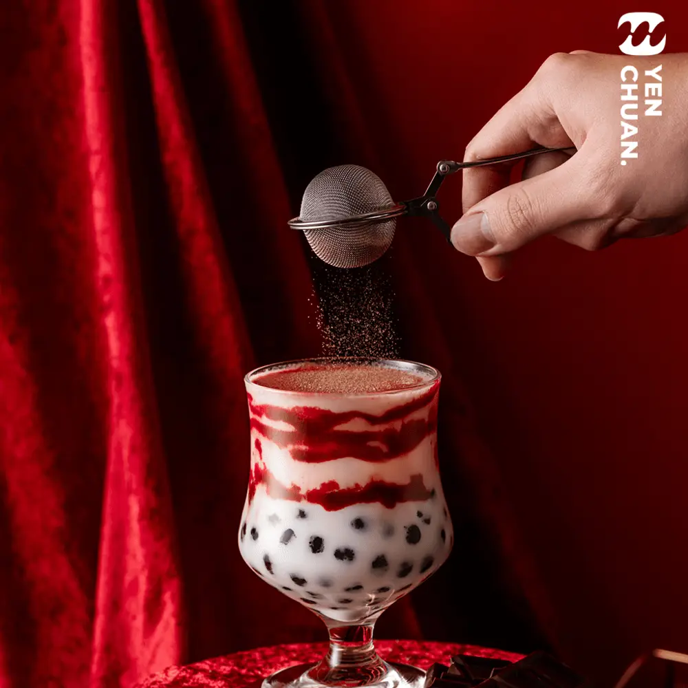
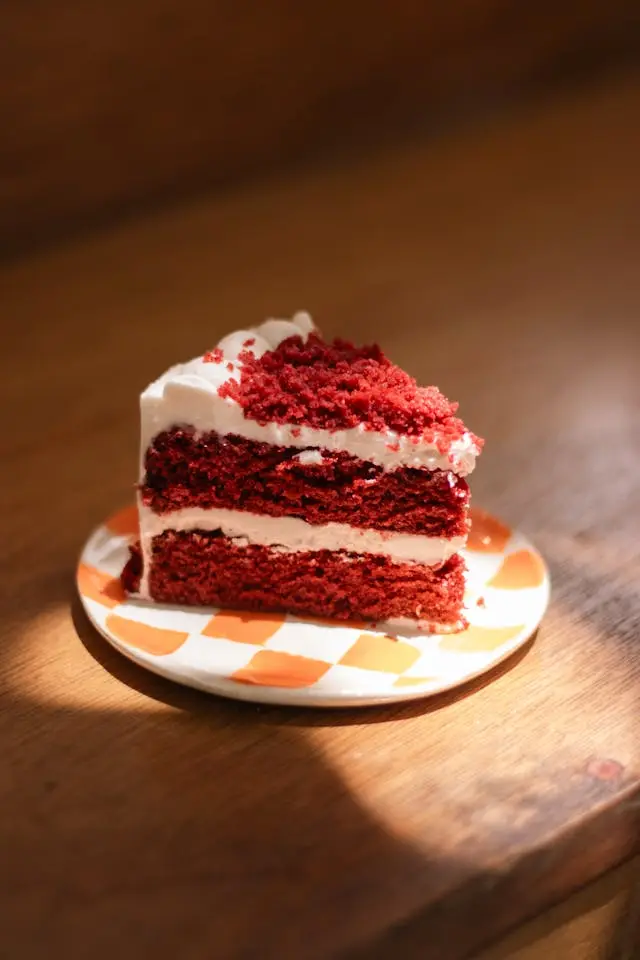
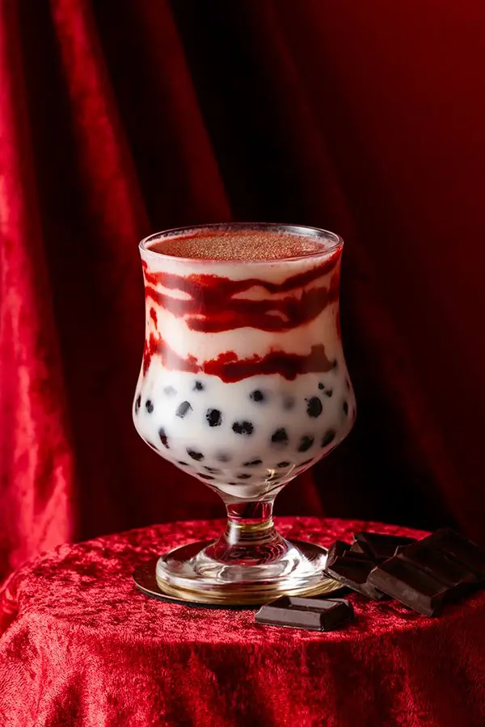

Articles / Recipes
Layered luxury – try red velvet chocolate camo!
2025-03-24 · Recipes, Recipes

Original public content from Yen Chuan. Product claims and specifications remain subject to confirmation by the company.
There’s more to red velvet than just hot chocolate, why not try our red velvet camo?

A layered look!
What makes red velvet chocolate cakes so iconic isn’t just about the rich, slightly tangy cocoa flavour, nor its smooth velvety texture – it’s the visuals!
Layers of pillowy rouge-coloured cake covered with snowy white frosting, plus extra frosting sandwiched in-between for good measure…just one look at this beautiful dessert is sure to set off your cravings!
How do we capture this layered aesthetic? Camo powder to the rescue! Combined with fresh milk, the cup shares the same iconic look with its inspiration.
What’s more, unlike your typical syrups, the camo paste actually stays on the cup – allowing people to take pictures to their heart’s content.
Snap up some insta-worthy shots, give it a stir, and finally savour that sweet, creamy goodness!

Red velvet camo drink
Decadent layers of crimson and white, on a bed of addictively chewy brown sugar boba…this drink is the perfect dessert in a cup!
What you’ll need
How to make
Add 100g camo powder to 200g hot water, then mix until a paste is formed
Smear the paste against the inner walls of the cup/glass. You can use horizontal stripes to mimic the dessert, or show off your creativity!
Add the cooked tapioca pearls, then pour in the milk and add the ice cubes. Enjoy!
For best results, sprinkle on some more camo powder, or cinnamon dust for a bit of spice!
Try it out!
Can’t wait to give this dessert in a cup a try? We’ve got you covered, pick up your ingredients with us.
Drop us a message to get started!